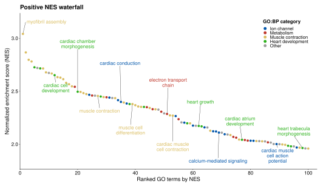
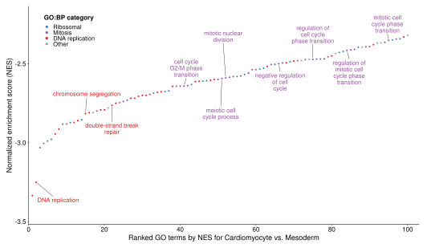
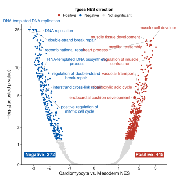
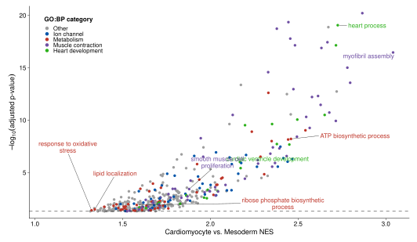
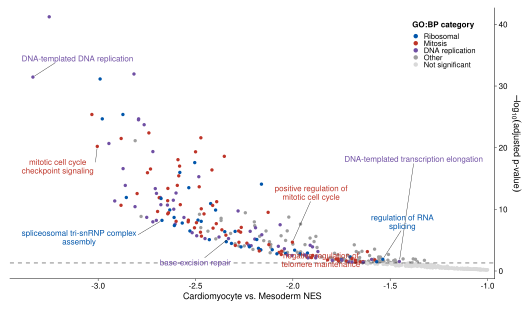
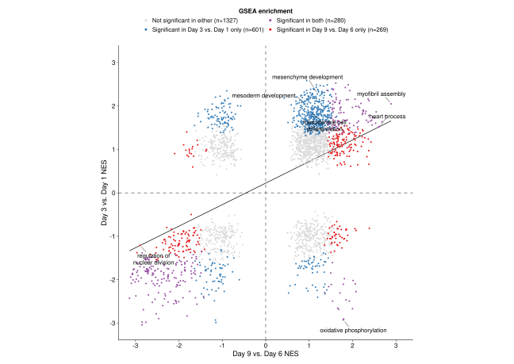

Gene set enrichment analysis NES waterfall, volcano, and comparative scatter plots
Gene set enrichment analysis NES waterfall, volcano, and comparative scatter plots
1 Overview
gsea-waterfall visualizes precomputed Gene Set Enrichment Analysis
(GSEA) results as ranked NES waterfalls, volcano plots, and cross-contrast
comparative NES scatterplots. The functions return ggplot objects. They are a
visualization layer applied after GSEA has been performed and do not change
supplied statistics or write files.
The examples use fixed GO biological-process results from the GSE122380 cardiomyocyte iPSC time-course bulk RNA-seq contrasts. Plot controls select, group, and label displayed rows; significance classes use the explicit adjusted-p-value cutoff without altering the supplied statistics.
1.1 Example data and preprocessing
The bundled tables are derived from the public NCBI GEO accession GSE122380, a bulk RNA-seq time course of human iPSC differentiation into cardiomyocytes. Basic sequencing and sample-level QC was performed before differential expression analysis. A DESeq2 comparison of day 9 (cardiomyocyte) versus day 3 (mesoderm) generated the cardiomyocyte-versus-mesoderm contrast used for the bundled GSEA results.
1.2 Use case
GSEA results are commonly shown as running enrichment plots for individual pathways or as dotplot/barplot-style summaries of a short list of terms. Those views work well for a focused pathway or compact top-term summary, but they provide limited room to inspect the broader ranked result.
The waterfall plots are intended for that complementary use case. They allow
roughly 100–200 ranked GO terms to be viewed together, including terms beyond
the usual top 10–20. This can make related parent/child terms and broader
functional patterns visible in the same ranked context. Caller-defined
term_groups can organize displayed terms by biological theme; they are
annotations only and do not perform redundancy reduction or additional
statistics.
The visual design was informed by pathway-level figures from Ciceri et al. (2024), Xu et al. (2025), Vuong et al. (2026), and Risgaard et al. (2026). Full citations are provided at the end of this tutorial.
2 Install and source
Install the plotting dependencies once:
Download and source the consolidated plotting file:
download.file(
'https://raw.githubusercontent.com/ZohebKhan1/gsea-waterfall/main/functions/gsea_visualizations.R',
'gsea_visualizations.R')
source('gsea_visualizations.R')This provides read_gsea_result_csv(), plot_gsea_waterfall(),
plot_gsea_volcano(), plot_gsea_half_volcano(), and
plot_gsea_nes_scatter().
3 Input data
Each table represents one GSEA contrast with one row per unique term. Results
can come from any GSEA workflow, including fgsea, clusterProfiler, or
another package. The default columns are:
| Column | Required | Meaning |
|---|---|---|
go_description |
yes | GO term description and fallback matching key |
go_term_id |
no | stable matching key used automatically when present |
NES |
yes | normalized enrichment score |
pval |
no | optional nominal GSEA p-value; used only for nominal-p-value ranking or y-axes |
padj |
yes | adjusted p-value in [0, 1] |
go_description, NES, and padj must be complete, and NES values must be finite. If pval is supplied, it is also validated. Key precedence is explicit id_col, then go_term_id when present, otherwise go_description. Comparative scatterplots use the exact shared-key intersection and do not impute absent terms.
If your result table uses different column names, map them when reading it:
fgsea_results <- read_gsea_result_csv(
'fgsea_results.csv',
term_col = 'pathway',
nes_col = 'NES',
padj_col = 'padj'
)For comparative plots, use id_col with a stable term identifier whenever one
is available. Without stable IDs, term descriptions must match exactly across
tables.
Load the bundled examples:
source('../functions/gsea_visualizations.R')
gsea_cardiomyocyte_vs_mesoderm <- read_gsea_result_csv(
'data/GSE122380_gsea_cardiomyocyte_vs_mesoderm.csv'
)
gsea_day9_vs_day6 <- read_gsea_result_csv(
'data/GSE122380_gsea_day9_vs_day6.csv'
)
gsea_day3_vs_day1 <- read_gsea_result_csv(
'data/GSE122380_gsea_day3_vs_day1.csv'
)
print(head(gsea_cardiomyocyte_vs_mesoderm, 5L))## go_term_id go_description NES
## 1 DNA replication DNA replication -3.251308
## 2 chromosome segregation chromosome segregation -2.816035
## 3 DNA-templated DNA replication DNA-templated DNA replication -3.335061
## 4 ribosome biogenesis ribosome biogenesis -2.989959
## 5 cell cycle checkpoint signaling cell cycle checkpoint signaling -3.032195
## pvalue padj pval
## 1 2.397081e-45 5.949555e-42 2.397081e-45
## 2 9.005650e-36 1.117601e-32 9.005650e-36
## 3 4.266279e-35 3.529635e-32 4.266279e-35
## 4 1.159752e-34 7.196264e-32 1.159752e-34
## 5 1.003151e-28 4.149703e-26 1.003151e-284 Ranked GSEA waterfall plots
plot_gsea_waterfall() selects one NES direction, ranks by NES or padj by default, and retains top_n terms. Nominal-p-value ranking is available when an optional pval column is supplied. term_groups controls colors and label_terms controls labels. Matches are case-insensitive against term descriptions or IDs.
For the example waterfall figures, classifications use caller-defined keyword
groups for ion-channel, metabolic, muscle-contraction, heart-development,
ribosomal, mitotic, and DNA-replication terms; unmatched terms remain Other.
4.1 Positive NES waterfall
gsea_cardiomyocyte_vs_mesoderm <- read_gsea_result_csv(
'tutorial/data/GSE122380_gsea_cardiomyocyte_vs_mesoderm.csv'
)
positive_term_groups <- list(
'Cardiac development' = c('cardiac', 'heart', 'muscle'),
'Metabolism' = c('mitochondrial', 'metabolic', 'oxidative')
)
positive_waterfall_plot <- plot_gsea_waterfall(
gsea_results = gsea_cardiomyocyte_vs_mesoderm,
direction = 'positive',
top_n = 100L,
rank_by = 'NES',
label_n = 12L,
term_groups = positive_term_groups
)direction chooses the NES side to display. top_n is applied after that
filter and after ranking. Terms are neutral unless term_groups is supplied;
each seed is matched case-insensitively against term IDs or descriptions.

4.2 Negative NES waterfall
gsea_cardiomyocyte_vs_mesoderm <- read_gsea_result_csv(
'tutorial/data/GSE122380_gsea_cardiomyocyte_vs_mesoderm.csv'
)
negative_term_groups <- list(
'Ribosomal' = c('ribosome', 'ribosomal', 'spliceosomal', 'rRNA', 'RNA'),
'Mitosis' = c(
'Mitosis', 'Meiosis', 'Nuclear division', 'cell cycle', 'telomere',
'spindle', 'Mitotic', 'Meiotic'),
'DNA replication' = c('chromosome', 'DNA', 'base', 'repair', 'DNA-'))
negative_waterfall_label_terms <- c(
'DNA replication',
'chromosome segregation',
'double-strand break repair',
'cell cycle G2/M phase transition',
'maturation of 5.8S rRNA',
'mitotic nuclear division',
'regulation of cell cycle phase transition',
'regulation of mitotic cell cycle phase transition',
'spliceosomal complex assembly')
negative_waterfall_plot <- plot_gsea_waterfall(
gsea_results = gsea_cardiomyocyte_vs_mesoderm,
direction = 'negative',
top_n = 100L,
rank_by = 'NES',
label_terms = negative_waterfall_label_terms,
term_groups = negative_term_groups
)Use rank_by = 'padj' when adjusted-p-value ranking, rather than NES magnitude,
should determine the displayed order. rank_by = 'pvalue' is available when an
optional nominal pval column is supplied. label_n selects labels
automatically when exact terms are not supplied; use label_terms when
specific terms should be shown.

5 Volcano plots
Use plot_gsea_volcano() for both NES directions in one panel and plot_gsea_half_volcano() for a directional view. All examples use the established adjusted p-value cutoff of 0.05.
5.1 Symmetric volcano
The example labels four padj-significant terms across each NES direction, from
approximately NES 2 to the most extreme observed value. The same terms are
used in the symmetric volcano. Directional half-volcano labels are selected
separately from significant terms assigned to caller-defined groups; Other
and Not significant terms are not labeled.
negative_volcano_label_terms <- c(
'DNA-templated DNA replication',
'double-strand break repair',
'interstrand cross-link repair',
'positive regulation of mitotic cell cycle')
positive_volcano_label_terms <- c(
'muscle tissue development',
'heart process',
'muscle cell development',
'myofibril assembly')
volcano_label_terms <- c(
negative_volcano_label_terms,
positive_volcano_label_terms)
positive_half_volcano_label_terms <- c(
'response to oxidative stress',
'lipid localization',
'ribose phosphate biosynthetic process',
'smooth muscle cell proliferation',
'cardiac ventricle development',
'ATP biosynthetic process',
'heart process',
'myofibril assembly')
negative_half_volcano_label_terms <- c(
'DNA-templated DNA replication',
'mitotic cell cycle checkpoint signaling',
'spliceosomal tri-snRNP complex assembly',
'base-excision repair',
'positive regulation of mitotic cell cycle',
'negative regulation of telomere maintenance',
'regulation of RNA splicing',
'DNA-templated transcription elongation')symmetric_volcano_plot <- plot_gsea_volcano(
gsea_results = gsea_cardiomyocyte_vs_mesoderm,
padj_cutoff = 0.05,
label_terms = volcano_label_terms,
contrast_label = 'Cardiomyocyte vs. Mesoderm'
)padj_cutoff controls significance coloring and the displayed counts. It does
not remove rows from the plot. Use label_terms instead of label_n when you
want to label exact terms.

5.2 Directional half-volcano plots
positive_half_volcano_plot <- plot_gsea_half_volcano(
gsea_results = gsea_cardiomyocyte_vs_mesoderm,
direction = 'positive',
p_col = 'padj',
padj_cutoff = 0.05,
label_terms = positive_half_volcano_label_terms,
term_groups = positive_term_groups,
inner_nes_limit = 1,
contrast_label = 'Cardiomyocyte vs. Mesoderm'
)inner_nes_limit = 1 keeps terms with positive NES at least 1 in magnitude.
Set p_col = 'pvalue' to show nominal p-values when the optional pval column
is supplied; significance coloring continues to use padj_cutoff.

negative_half_volcano_plot <- plot_gsea_half_volcano(
gsea_results = gsea_cardiomyocyte_vs_mesoderm,
direction = 'negative',
p_col = 'padj',
padj_cutoff = 0.05,
label_terms = negative_half_volcano_label_terms,
term_groups = negative_term_groups,
inner_nes_limit = 1,
contrast_label = 'Cardiomyocyte vs. Mesoderm'
)
6 Comparative NES scatterplot
plot_gsea_nes_scatter() compares exact shared term keys. By default it keeps
terms significant in at least one contrast and does not draw a fitted line. The
line is descriptive when requested and does not alter enrichment statistics.
nes_scatter_plot <- plot_gsea_nes_scatter(
gsea_x = gsea_day9_vs_day6,
gsea_y = gsea_day3_vs_day1,
x_label = 'Day 9 vs. Day 6 NES',
y_label = 'Day 3 vs. Day 1 NES',
color_by = 'significance',
quadrant = 'all',
x_name = 'Day 9 vs. Day 6',
y_name = 'Day 3 vs. Day 1',
label_n_x_only = 3L,
label_n_y_only = 3L,
label_n_both = 3L,
padj_cutoff = 0.05,
include_nonsignificant = TRUE,
equal_axis_limits = TRUE,
show_fit_line = TRUE
)
Set include_nonsignificant = FALSE to focus on terms significant in at least
one contrast. Use quadrant = 'q1' or quadrant = 'q3' to focus on concordant
positive or negative NES values. equal_axis_limits = TRUE makes the two NES
axes directly comparable.
7 API summary
| Function | Contract |
|---|---|
read_gsea_result_csv() |
reads and validates one precomputed CSV without filtering rows |
plot_gsea_waterfall() |
returns a ranked one-direction ggplot |
plot_gsea_volcano() |
returns a symmetric NES-versus-adjusted-p-value ggplot |
plot_gsea_half_volcano() |
returns a directional ggplot after the explicit NES boundary |
plot_gsea_nes_scatter() |
returns a ggplot from the exact shared term-key intersection |
Source documentation defines the complete argument contracts, including the common term_col, nes_col, padj_col, and optional id_col arguments. Nominal-p-value mapping is only needed when using the optional pval-based controls.
8 References
- Subramanian A, Tamayo P, Mootha VK, et al. Gene set enrichment analysis: a knowledge-based approach for interpreting genome-wide expression profiles. PNAS. 2005. https://www.pnas.org/doi/10.1073/pnas.0506580102
- Ciceri G, Baggiolini A, Cho HS, et al. An epigenetic barrier sets the timing of human neuronal maturation. Nature. 2024;626:881-890. https://doi.org/10.1038/s41586-023-06984-8
- Xu N, Cho HS, Hackland JOS, et al. Genome-wide CRISPR screen identifies Menin and SUZ12 as regulators of human developmental timing. Nature Cell Biology. 2025;27:1411-1421. https://doi.org/10.1038/s41556-025-01751-5
- Vuong CK, Weber A, Seong P, et al. A single-cell multiomic analysis identifies molecular and gene-regulatory mechanisms dysregulated in developing Down syndrome neocortex. Science. 2026;392:eaea1259. https://doi.org/10.1126/science.aea1259
- Risgaard RD, et al. Molecular and cellular processes disrupted in the early postnatal Down syndrome prefrontal cortex. Science. 2026;392:eaea1549. https://doi.org/10.1126/science.aea1549